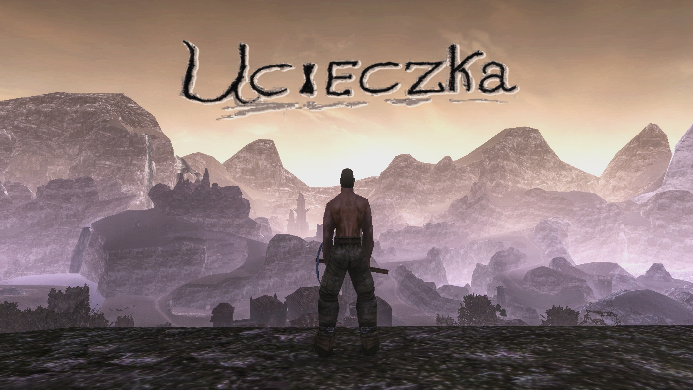
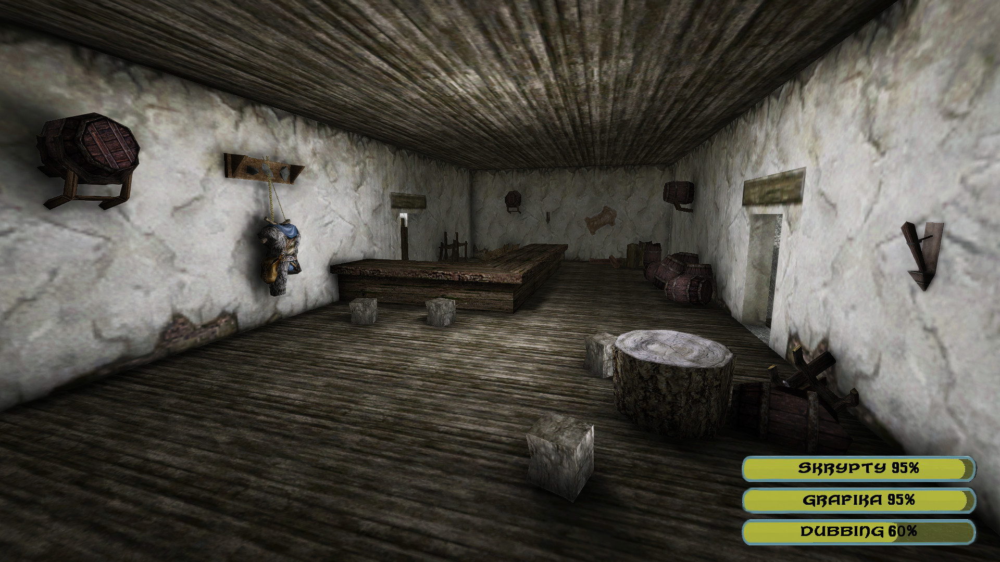

NOWY ADRES STRONY
(25 kwietnia 2020)
Minął rok hostowania strony, co oznacza wygaśnięcie zakupionego hostingu i domeny g2ucieczka.pl. Strona zostaje przeniesiona na darmowy hosting Github Pages i dostępna pod linkiem theketrab.github.io/g2ucieczka. Paczka z modem jest wrzucona na Dysk Google, a link do niej znajduje się w dziale Download.
YOUTUBERZY NAGRYWAJĄ
(20 kwietnia 2020)
Ucieczkę na swoich kanałach przeszło już wielu znanych youtuberów. Jeśli od grania wolicie oglądanie, słuchanie żartów i zajadanie popcornu, to koniecznie zajrzyjcie na ich kanały! Poniżej zamieszczam listę z linkami do playlist z ich gry. Kolejnym śmiałkiem, który podjął się nagrania modyfikacji jest Robinskateboard. Ile godzin mu to zajmie? :)
UCIECZKA W NOWYM ROKU
(1 stycznia 2020)
Patch w wersji 1.1 zaplanowany był jeszcze na koniec 2019, jednak z powodu braku czasu w roku szkolnym prace nie były kontynuowane
'na zabój', a wyłącznie hobbystycznie, czasami, weekendowo. Dołożyłem wszelkich starań, aby wydać Ucieczkę przed kilkumiesięcznym wyjazdem
i dać Wam kompletną modyfikację na wakacyjne wieczory. Teraz pora na odpoczynek. Błędy zgłaszane przez graczy są naprawiane,
część dubbingu dogrywana i podgłaśniana, system skryptowy przepisywany na Uniona. Oficjalnej łatki można spodziewać się w wakacje 2020.
PIERWSZY PATCH
(16 lipca 2019)
W dziale Download dostępna jest wersja 1.0.1 zwierająca wszystkie dotychczas wydane łatki. Nie jest to patch 1.1.
Zasadniczy patch jest planowany dopiero na przyszł rok!
UCIECZKA UKOŃCZONA !
(1 lipca 2019)

Modyfikację w wersji 1.0 możecie pobrać w dziale Download.
TRAILER I DATA PREMIERY
(9 czerwca 2019)
TYSIĄC POLUBIEŃ !
(7 maja 2019)

Z okazji tysiąca polubień na Facebooku, przygotowałem małe zestawienie stanu prac. Prace z dubbingiem zmierzają w dobrą stronę i mimo że przed nami jeszcze trochę do nagrania, to tempo z jakim udaje się to robić pozwala zachować optymizm.
DRUGI GAMEPLAY
(22 kwietnia 2019)
Kolejny gameplay przedstawia jedno z początkowych zadań oraz dubbing. Razem z Willem zakradamy się do skrzyni Louisa i wykradamy mapę. Warto zaznaczyć, że mapa, która jest pokazana na filmie, już jest zmieniona na całkowicie autorską, nową mapę świata!
TIMELAPSE
(4 listopada 2018)
PIERWSZY GAMEPLAY
(18 września 2018)
Nagrałem dziś trzyminutowy film pokazujący eksplorację pewnego tajemniczego miejsca. Oczywiście w Ucieczce przełączników, kombinacji i eventów będzie sporo :) Kolejne materiały i info wkrótce. [warto przyjrzeć się kombosom wrogów i wolnemu celowaniu, o którym pisałem już wcześniej]